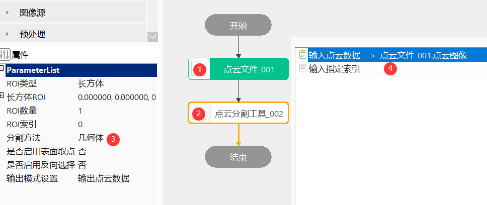
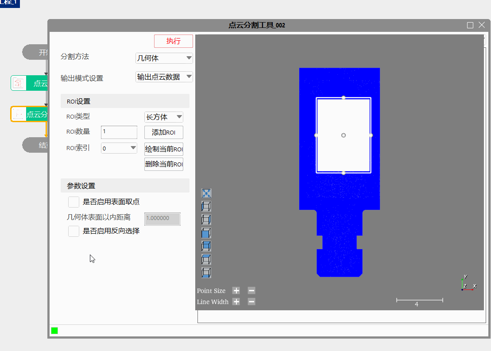
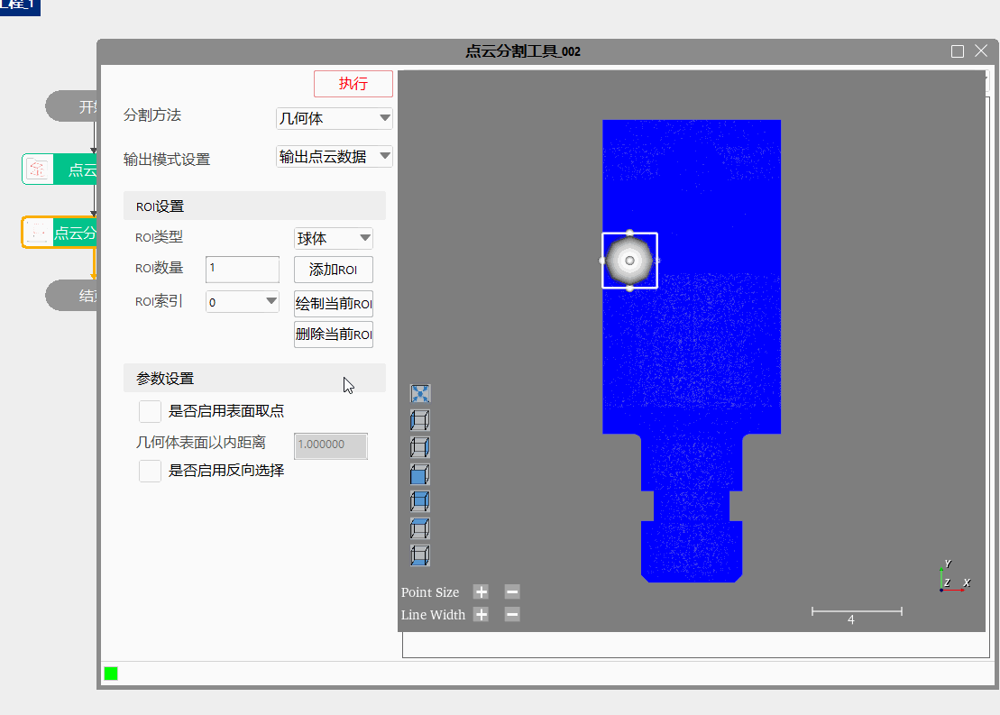
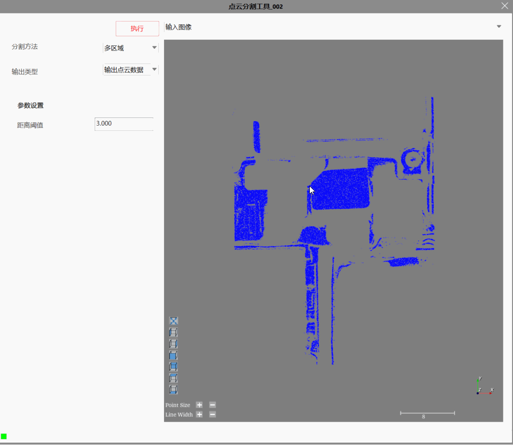
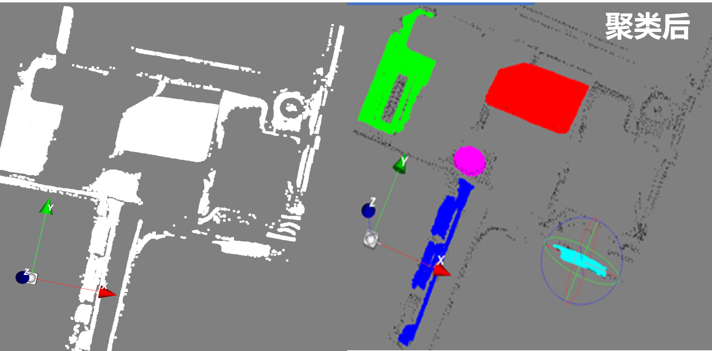
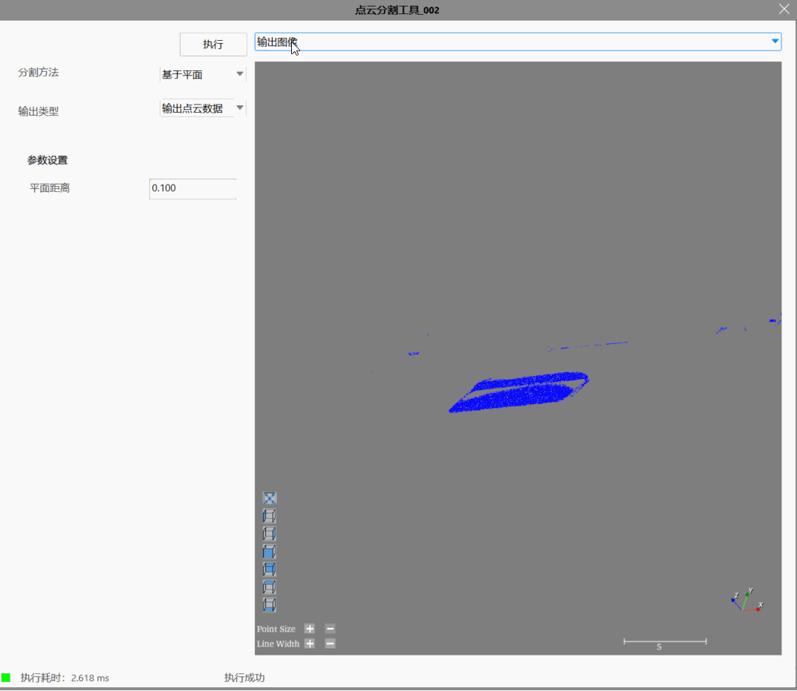

Công cụ phân đoạn đám mây điểm phù hợp với các kịch bản như đo lường 3D、kiểm tra, cung cấp chức năng phân đoạn hình học dạng hình hộp chữ nhật、hình cầu, lấy đám mây điểm của khối hình học hoặc trong một phạm vi nhất định trên bề mặt khối hình học, đồng thời cũng cung cấp chức năng phân đoạn cụm dựa trên khoảng cách Euclid.
Trong đo lường 3D, phân đoạn đám mây điểm được ứng dụng khá rộng rãi, như kiểm tra khung giữa điện thoại, lấy đám mây điểm của viền khung, giảm khối lượng tính toán cho các bước đo lường、kiểm tra tiếp theo；khi nhiều công cụ thước cặp cùng tham gia đo lường, trước tiên dùng công cụ phân đoạn đám mây điểm để lấy đám mây điểm biên, sau đó dùng công cụ thước cặp, có thể tăng tốc hiệu suất tính toán tổng thể, v.v.
step1：Thêm tệp đám mây điểm、công cụ phân đoạn đám mây điểm, và nhấp đúp để mở chuỗi tham số công cụ, liên kết tệp đám mây điểm, như hình 3-1；
step2：Nhấp chuột phải vào công cụ phân đoạn đám mây điểm và chọn “Thuộc tính” để mở giao diện nâng cao của công cụ, như hình 3-2, chọn loại ROI là hình hộp chữ nhật, thiết lập tham số phân đoạn, sau đó nhấp chạy để thu được dữ liệu đám mây điểm sau phân đoạn；


step1：Thêm tệp đám mây điểm、công cụ phân đoạn đám mây điểm, và nhấp đúp để mở chuỗi tham số công cụ, liên kết tệp đám mây điểm, như hình 3-1；
step2：Nhấp chuột phải vào công cụ phân đoạn đám mây điểm và chọn “Thuộc tính” để mở giao diện nâng cao của công cụ, như hình 3-3, chọn loại ROI là hình cầu, thiết lập tham số phân đoạn, sau đó nhấp chạy để thu được dữ liệu đám mây điểm sau phân đoạn；

step1：Thêm tệp đám mây điểm、công cụ phân đoạn đám mây điểm, và nhấp đúp để mở chuỗi tham số công cụ, liên kết tệp đám mây điểm, như hình 3-1；
step2：Nhấp chuột phải vào công cụ phân đoạn đám mây điểm và chọn “Thuộc tính” để mở giao diện nâng cao của công cụ, như hình 3-4, thiết lập tham số phân đoạn, sau đó nhấp chạy để thu được dữ liệu đám mây điểm sau phân đoạn；


step1：Thêm tệp đám mây điểm、công cụ phân đoạn đám mây điểm, và nhấp đúp để mở chuỗi tham số công cụ, liên kết tệp đám mây điểm, như hình 3-1；
step2：Nhấp chuột phải vào công cụ phân đoạn đám mây điểm và chọn “Thuộc tính” để mở giao diện nâng cao của công cụ, như hình 3-3, thiết lập tham số phân đoạn, sau đó nhấp chạy để thu được dữ liệu đám mây điểm sau phân đoạn；

| Tên tham số | Mô tả tham số |
|---|---|
| Dữ liệu đám mây điểm đầu vào | Đám mây điểm đầu vào cần phân đoạn |
| Mặt phẳng chuẩn đầu vào | Mặt phẳng sau khi fitting đầu vào |
| Chỉ số chỉ định đầu vào | Biểu thị phần chỉ số chỉ định của toàn bộ đám mây điểm, phân đoạn ra các điểm nằm trong ROI, nếu không liên kết thì đại diện cho toàn bộ chỉ số |
| Tên tham số | Mô tả tham số |
|---|---|
| Loại ROI | Chia thành hai loại：hình hộp chữ nhật và hình cầu |
| ROI hình hộp chữ nhật | Hiển thị vị trí ROI hình hộp chữ nhật |
| ROI hình cầu | Hiển thị vị trí ROI hình cầu |
| Số lượng ROI | Khi bật ROI, dùng để thiết lập số lượng ROI, phạm vi：[1,50] |
| Chỉ số ROI | Dùng để chuyển đổi giữa các chỉ số khác nhau |
| Phương pháp phân đoạn | Chia thành ba loại：khối hình học、đa vùng và dựa trên mặt phẳng |
| Có bật lấy điểm bề mặt hay không | Sau khi bật chức năng này, cần nhập “khoảng cách bên trong bề mặt khối hình học”, biểu thị khi phân đoạn đám mây điểm, chỉ phân đoạn ra đám mây điểm trong phạm vi này |
| Khoảng cách bên trong bề mặt khối hình học | Khi phân đoạn đám mây điểm, chỉ phân đoạn ra đám mây điểm trong phạm vi này |
| Có bật chọn ngược hay không | Bật chức năng này, đám mây điểm vốn phải được xuất ra sẽ không được xuất ra, đám mây điểm vốn không được xuất ra sẽ được xuất ra |
| Ngưỡng khoảng cách | Chỉ định phạm vi khoảng cách bao nhiêu thì các điểm thuộc cùng một lớp |
| Có bật ngưỡng tương đối hay không | Bật, ngưỡng khoảng cách là một hệ số；không bật, ngưỡng khoảng cách là một giá trị khoảng cách tuyệt đối |
| Khoảng cách mặt phẳng | Xuất đám mây điểm nằm trong khoảng cách ±dDistance/2 so với mặt phẳng |
| Thiết lập chế độ đầu ra | Chia thành hai loại：xuất chỉ số chỉ định và xuất dữ liệu đám mây điểm |
| Bật tính toán song song | Có bật tính toán song song hay không, khi chọn có, thuật toán sẽ bật phương thức tính toán song song OpenMp, có thể nâng cao tốc độ tính toán, nhưng có thể xuất hiện tình trạng thời gian xử lý không ổn định, khi chọn không, thuật toán sẽ tắt tính toán song song OpenMp。 |
| Phần trăm số luồng | Thiết lập phần trăm số luồng của tính toán song song, phạm vi hợp lệ là (0, 0.75], tương ứng biểu thị phạm vi phần trăm(0%, 75%]。 |
Tham số giao diện nâng cao nhất quán với tham số cửa sổ thuộc tính, các nút tương tác như sau：
| Tên nút | Mô tả tham số |
|---|---|
| Thêm ROI | Trong hình ảnh giao diện nâng cao, tự động thêm ROI |
| Vẽ ROI hiện tại | Trong hình ảnh giao diện nâng cao, nhấp và kéo chuột tại vị trí tương ứng để vẽ ROI dưới chỉ số hiện tại |
| Xóa ROI hiện tại | Trong hình ảnh giao diện nâng cao, nhấp và kéo chuột tại vị trí tương ứng để xóa ROI dưới chỉ số hiện tại |
| Tên tham số | Mô tả tham số |
|---|---|
| Chỉ số chỉ định đầu ra | Xuất giá trị chỉ số của các điểm được phân đoạn ra trong ROI |
| Dữ liệu đám mây điểm đầu ra | Xuất dữ liệu đám mây điểm trong ROI |
| Tập đám mây điểm đầu ra | Xuất tập hợp đám mây điểm |
| Cụm đầu ra | Tập chỉ số sau khi phân đoạn đa vùng |
| Tên tham số | Mô tả tham số |
|---|---|
| Chỉ số chỉ định đầu ra | Xuất giá trị chỉ số của các điểm được phân đoạn ra trong ROI |
| Dữ liệu đám mây điểm đầu ra | Xuất dữ liệu đám mây điểm trong ROI |
| Tập đám mây điểm đầu ra | Xuất tập hợp đám mây điểm |
| Cụm đầu ra | Tập chỉ số sau khi phân đoạn đa vùng |
| Thời gian thực thi | Thời gian thực thi công cụ |
| Kết quả thực thi | Kết quả thực thi công cụ |
Tham khảo “\Samples\3D\Đám mây điểm\Đo lường đám mây điểm.gvp”.
【1】Phân đoạn đa vùng mất nhiều thời gian, thông thường chỉ dùng cho phân đoạn cụm với lượng dữ liệu nhỏ